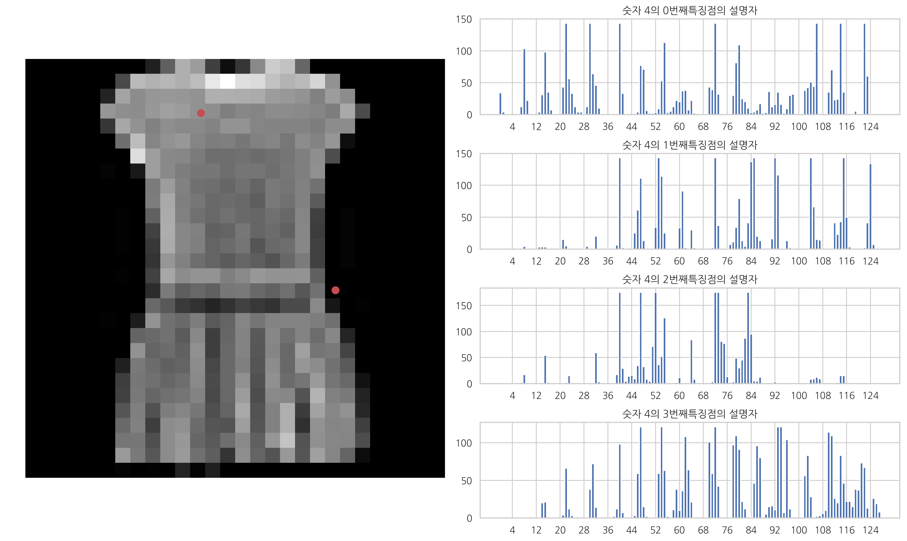
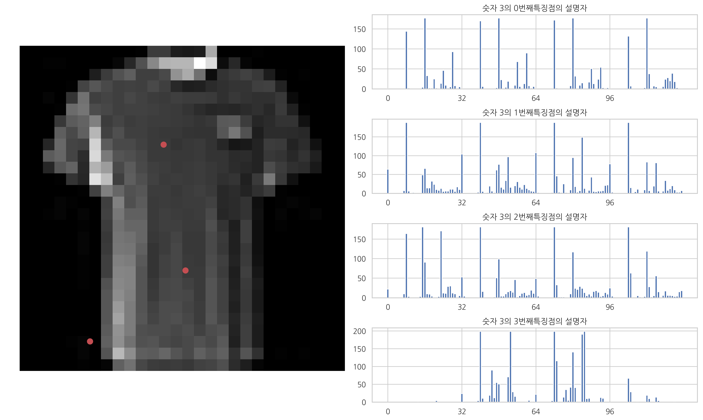

plt.figure(figsize=(15, 9)) plt.subplot(1, 2, 1) plt.imshow(x_train[3], cmap='gray') pts_x = [kp.pt[0] for kp in df.kps[3]] pts_y = [kp.pt[1] for kp in df.kps[3]] plt.scatter(pts_x[:4], pts_y[:4], s=200, c='r') plt.axis('off')
des = df.des[418] for i in range(4): plt.subplot(4, 2, (i+1)*2) plt.bar(np.arange(len(des[i])), des[i]) plt.xticks(range(4, len(des[i]), 8)) plt.title("숫자 4의 {}번째특징점의 설명자".format(i))
plt.tight_layout() plt.show()
plt.figure(figsize=(15, 9)) plt.subplot(1, 2, 1) plt.imshow(x_train[516], cmap='gray') pts_x = [kp.pt[0] for kp in df.kps[10]] pts_y = [kp.pt[1] for kp in df.kps[10]] plt.scatter(pts_x[:4], pts_y[:4], s=200, c='r') plt.axis('off')
des = df.des[101] for i in range(4): plt.subplot(4, 2, (i+1)*2) plt.bar(np.arange(len(des[i])), des[i]) plt.xticks(range(0, len(des[i]), 32)) plt.title("숫자 3의 {}번째특징점의 설명자".format(i))
plt.tight_layout() plt.show()


1 2 3 4 5 6 7 8
# 특징점을 추출하지 못한 이미지는 데이터셋에서 제외 df = df.dropna() df = df.reset_index(drop=True) X = [] for des in df.des: for d in des: X.append(d) X = np.asarray(X)
1 2 3 4
from sklearn.cluster import KMeans model_clu = KMeans(n_clusters=8, init="k-means++").fit(X)